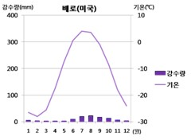

기상정보

<기상 정보>
기온: 겨울에는 주로 0도 이하, 여름에는 20도 이하→ 연교차가 큼
연 강수량: 일반적으로 겨울에는 강수량이 적으나
주로 눈이 내리며 이외 봄, 여름, 가을에는 비가 내린다
습도: 주로 대륙성 기후가 특징인 냉대기후에서는
겨울에는 공기가 매우 건조하며
여름에는 상대적으로 습도가 높아질 수 있으나 전체적으로
다른 지역보다는 습도가 낮은 경향을 보인다
구름: 겨울에는 기온이 낮기에 주로 얇은 구름이 관측되며
상대적으로 다른 기후지역보다는 구름이 적다.